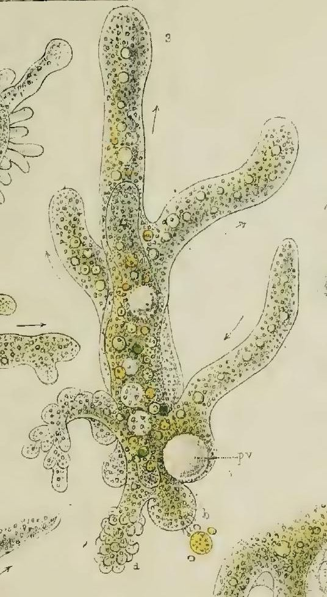

主动运输与胞吞、胞吐
本期导读
载体蛋白 · 能量 · 速率曲线

视频原话 · 导读3 句
- 同学们好！这节课梳理人教版必修一第四章第二节——主动运输与胞吞、胞吐。8.0s
- 高考常考三种跨膜运输方式的比较、影响运输速率的曲线，以及运输方式的判断。7.8s
- 我们按七个考点梳理，每个考点都讲清楚怎么考、怎么做。5.6s
主动运输的特点01#
- 逆浓度梯度运输
- 需要载体蛋白协助
- 消耗细胞内化学反应释放的能量
- 载体蛋白结合物质后空间结构改变
易错
主动运输用载体蛋白，不用通道蛋白；能量主要来自细胞呼吸
视频原话3 句
- 考点一，主动运输。物质逆浓度梯度进行跨膜运输，需要载体蛋白的协助，同时还要消耗细胞内化学反应释放的能量。11.5s
- 载体蛋白与离子或分子结合后，在能量的推动下空间结构发生变化，把物质转运到膜的另一侧。9.1s
- 易错：主动运输用的是载体蛋白，不是通道蛋白；能量主要来自细胞呼吸。7.4s
主动运输的意义02#
保证细胞按照生命活动的需要，主动选择吸收营养物质，排出代谢废物和有害物质
- 1小肠上皮细胞吸收葡萄糖、氨基酸
- 2植物根细胞吸收矿质离子
- 3轮藻细胞中 K+ 浓度比周围水高 63 倍
考法
加呼吸抑制剂后吸收速率下降 → 主动运输（受能量影响的只有主动运输和胞吞、胞吐）
视频原话3 句
- 考点二，主动运输的意义。它保证细胞按照生命活动的需要，主动选择吸收所需要的营养物质，排出代谢废物和有害物质。11.8s
- 实例：小肠上皮细胞吸收葡萄糖、氨基酸；植物根细胞吸收矿质离子；轮藻细胞中K+浓度比周围水环境高63倍。12.3s
- 考法：用呼吸抑制剂处理后，某物质吸收速率下降，说明是主动运输。解题方法：受能量影响的，只有主动运输和胞吞、胞吐。12.7s
三种方式的比较03#
| 方式 | 运输方向 | 转运蛋白 | 能量 |
|---|---|---|---|
| 自由扩散 | 高 → 低 | 不需要 | 不消耗 |
| 协助扩散 | 高 → 低 | 需要 | 不消耗 |
| 主动运输 | 低 → 高 | 需要（载体蛋白） | 消耗 |
解题方法
三问：方向如何？要不要转运蛋白？耗不耗能？
视频原话4 句
- 考点三，三种跨膜运输方式的比较。自由扩散：顺浓度梯度，不需要转运蛋白，不耗能。9.0s
- 协助扩散：顺浓度梯度，需要转运蛋白，不耗能。5.1s
- 主动运输：逆浓度梯度，需要载体蛋白，消耗能量。5.2s
- 解题方法：三问——方向如何？要不要转运蛋白？耗不耗能？6.7s
浓度对速率的影响04#
自由扩散
协助扩散 / 主动运输
解题方法
直线 → 自由扩散；有平台 → 受转运蛋白数量限制（主动运输还可能受能量限制）
视频原话3 句
- 考点四，物质浓度对运输速率的影响。自由扩散的速率与浓度差成正比，曲线是一条过原点的直线。9.9s
- 协助扩散和主动运输的速率先随浓度增大而增大，后来受转运蛋白数量的限制，不再增加。9.0s
- 解题方法：直线是自由扩散；出现平台的，限制因素是转运蛋白的数量，主动运输还可能受能量限制。10.2s
氧气对速率的影响05#
自由扩散 / 协助扩散
主动运输
易错
起点不在原点（无氧呼吸供能）；哺乳动物成熟红细胞只进行无氧呼吸，速率与 O2 无关
视频原话4 句
- 考点五，O2浓度对运输速率的影响。自由扩散和协助扩散不耗能，速率与O2浓度无关，是一条水平线。10.5s
- 主动运输消耗能量：O2浓度为0时，无氧呼吸也能提供能量，所以曲线不从原点开始。8.7s
- O2浓度增大，速率增大；最后受载体蛋白数量的限制，趋于平稳。7.0s
- 易错：哺乳动物成熟红细胞只进行无氧呼吸，它的主动运输速率与O2浓度无关。8.0s
胞吞与胞吐06#
易错
胞吞、胞吐消耗能量，需要膜上蛋白质参与，依赖膜的流动性
视频原话4 句
- 考点六，胞吞和胞吐。大分子物质进出细胞，靠的是胞吞和胞吐。6.9s
- 胞吞时，大分子先与膜上的蛋白质结合，细胞膜内陷形成小囊，包围着大分子，再分离下来形成囊泡进入细胞。11.0s
- 胞吐时，囊泡移到细胞膜处，与细胞膜融合，把大分子排出细胞，比如分泌蛋白的分泌。8.4s
- 易错：胞吞、胞吐需要消耗能量，也需要膜上蛋白质的参与，依赖于膜的流动性。7.9s
判断运输方式07#
- 一看分子大小大分子、颗粒物 → 胞吞、胞吐
- 二看浓度梯度逆浓度梯度 → 主动运输
- 三看蛋白和能量要蛋白不耗能 → 协助扩散；都要 → 主动运输；都不要 → 自由扩散
易错
葡萄糖进入红细胞是协助扩散，进入小肠上皮细胞是主动运输
试一试：先看分子大小，再看浓度梯度和是否需要载体、能量。
- 1小肠上皮细胞从肠腔吸收葡萄糖，可逆浓度梯度进行，需要载体并消耗能量主动运输：逆浓度梯度、要载体、要能量，三个条件都满足。
- 2葡萄糖进入红细胞，顺浓度梯度，需要载体但不消耗能量协助扩散：要蛋白、不耗能，属于被动运输。
- 3白细胞吞噬侵入人体的病菌胞吞或胞吐：病菌属于大分子或颗粒物，不能穿过膜，只能靠膜的流动性进出。
- 4甘油、乙醇等脂溶性小分子进出细胞，不需要载体也不耗能自由扩散：小分子、顺浓度、不要蛋白、不要能量。
视频原话4 句
- 考点七，判断物质运输方式。一看分子大小：大分子、颗粒物走胞吞、胞吐。8.2s
- 二看浓度梯度：逆浓度梯度运输的，是主动运输。5.1s
- 三看转运蛋白和能量：要蛋白不耗能是协助扩散，都需要是主动运输，都不需要是自由扩散。8.8s
- 易错：同一种物质可能有不同的运输方式，葡萄糖进入红细胞是协助扩散，进入小肠上皮细胞是主动运输。10.4s
易错速查✓
先自己判断，再点按钮查看对错与解析。
- 1主动运输需要的转运蛋白是通道蛋白说法错误：主动运输需要载体蛋白
- 2轮藻吸收K+可以逆浓度梯度进行说法正确。
- 3自由扩散的速率不受物质浓度影响说法错误：与浓度差成正比
- 4O2浓度为0时，主动运输速率为0说法错误：无氧呼吸也能提供能量
- 5胞吞和胞吐不消耗能量说法错误：需要消耗能量
- 6葡萄糖进入不同细胞的方式可能不同说法正确。
方向、蛋白、能量，三问定方式！
视频原话 · 易错速查5 句
- 最后，用六道判断题检验一下。3.6s
- 判断一？错，主动运输用载体蛋白。判断二？对。6.6s
- 判断三？错，与浓度差成正比。判断四？错，无氧呼吸也能供能。8.0s
- 判断五？错，胞吞、胞吐消耗能量。判断六？对。6.8s
- 七个考点串成一条线：方向、蛋白、能量，三问定方式。我们下期再见！7.7s
图片来源
图片来源：Wikimedia Commons —— Joseph Leidy《Amoeba proteus from Leidy》Public domain
Joseph Leidy, Public domain